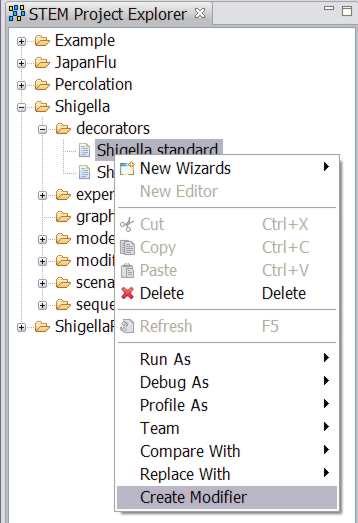
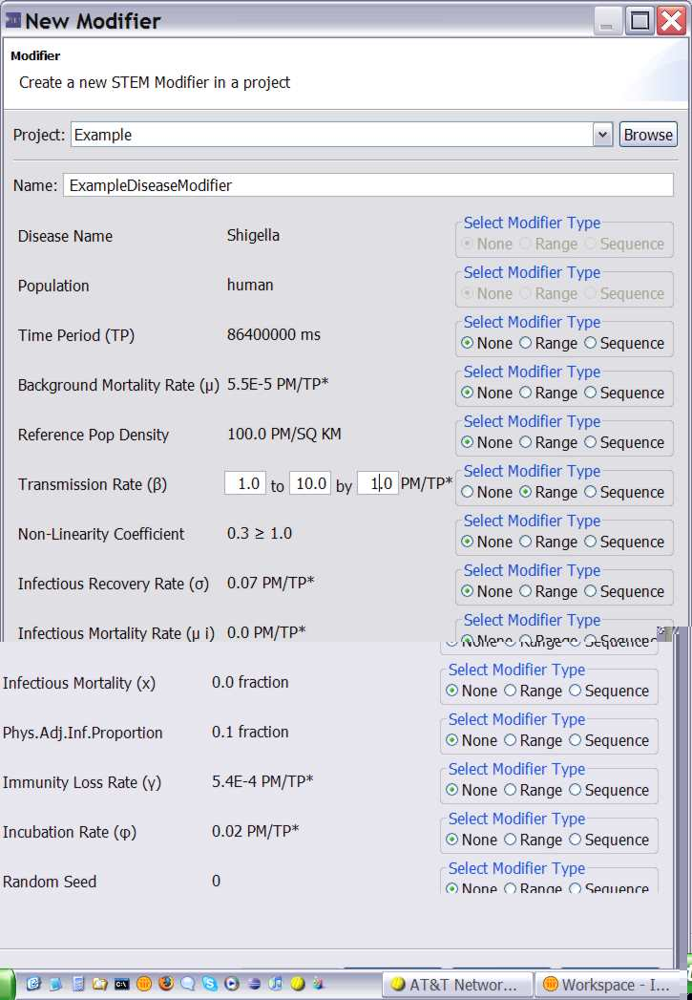
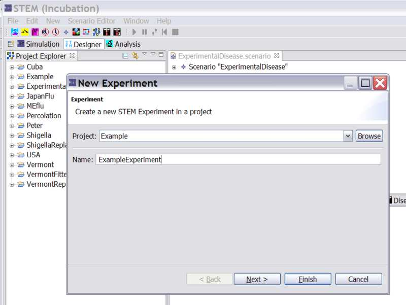

Overview:
An Experiment is a collection of modifiers with a link to a
Scenario
An experiment can run just like a scenario can run. When you run an experiment
it creates a Batch
A Batch is an executable that spawns off (a sequence of) simulations. The
Experiment uses modifiers to make changes to the scenario then run a simulation
from each.
New View: Active Batches (analogous to Active Simulations)
1) create your scenario
2) in the editor you can create modifiers for models, decorators (a disease
model), or graphs.
To create a modifier for a disease, for example, find your disease in the STEM
Project explorer. Select it, right click on your disease, and chose create a modifier
as shown in figure 1.
|
 |
 |
| Figure 1a: Creating a new modifier for a particular disease in an existing scenario | Figure 1b: Defining the new modifier for an experiment |
This will launch a new dialog to help you create a modifier that can be added to
an experiment (see figure 2). In the new modifier dialog, for example, under Transmission rate select "range"
(sequence not yet enabled) and specify the range as shown in figure 2.
3) On top, select "Experiment Model" to launch the experiment wizard (Figure 2)
drag the scenario into the experiment
drag any number of modifiers into the experiment
click on the experiment, right click, and run it.
|
 |
|
Figure 2: The New Experiment Wizard. |